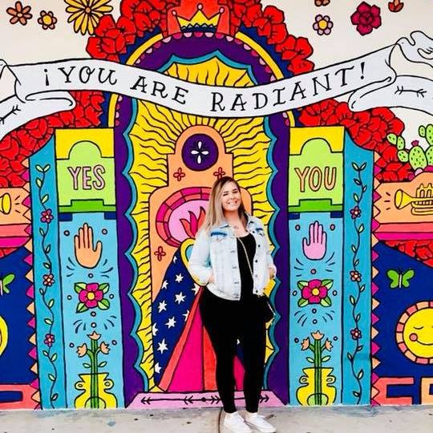

About me...

My name is Christina Griffin. I was born in Warwick, Rhode Island and lived there with my mom and siblings. I attended Park Elementary School until fifth grade when I moved in with my dad in Cranston. I then attended Eden Park Elementary School for 5th grade, Park View Middle School 6th-8th grade, and then continued 9th-12th at Cranston High School East. BAM! All of a sudden, I was about to finish high school and seemingly everyone knew what they were doing next except me. Upon graduation, with zero guidance in any direction, I attempted to pursue a college degree. After all, that was what all the kids my age were doing. I started at the Community College of Rhode Island and transferred to the University of Rhode Island. During these college years, I was working multiple jobs while taking the bus to and from school and/or work. My living situation was less than desirable, always up in the air, and with all of this going on I was unable to put my best foot forward with school. At age 22, I made the decision to join the US Navy.
Joining the US Navy was the best decision I could have ever made for myself. The guidance I was lacking throughout high school and the following years was provided tenfold with the Navy. Although I was petrified to leave my family (who were of little to no help in my young adult life anyways), being away from them was more than necessary for my personal growth. Aside from the guidance received along the way, I grew to learn much more about myself than I would have, had I not left. I signed a five-year enlistment contract as a Quartermaster (QM) (managing ship's navigation), entering at the rank of E-3 (vice E-1), thanks to my previous college credits. Within my first two years on active duty, I was able to complete an Associates Degree in Science. Within three years I had achieved the rank of a Second Class Petty Officer (E-5).
Nearing the end of my first enlistment, I felt similar to the way I felt at the end of high school... Wait, what?! It's over already?! I did NOT prepare for this!!! I was now over the age of 25 and would not be covered under my father's health insurance. I managed to acrue debt that I could not handle without the steady paycheck I had gotten used to. What kind of jobs could I even apply for with experience as a Quartermaster? I was not interested in pursuing ship navigation as a career. I needed another chance to do better for myself.
I decided to reenlist for four more years. I submitted a thorough package to "Big Navy," requesting to convert from a Quartermaster to a Navy Career Counselor (NC). The request was approved. By the end of my fifth year, just months after reenlistment, I made First Class (E-6). I became the youngest (tenure-wise) Command Career Counselor in the Navy (Yay NC1 Griffin!!!). During my last few years, I had been elected President of both the Multi-Cultural Committee, and the First Class Petty Officer's Association, I was also able to achieve two Apprenticeship Certifications from the Department of Labor; 'Counseling (Professional and Kindred)' and 'Administrative Services Manager'. While I cannot take full credit, I mentored my junior Sailors for Junior Sailor of the Quarter (JSOQ) and Junior Sailor of the Year (JSOY), of which they won JSOQ thrice, and JSOY two years in a row. All of that while I was enrolled full time at National University for a Bachelor's Degree in Business Administration. Oh yeah and I paid off all of my debt, too.
Nearing the end of my second enlistment, I was much better prepared to make the age-old decision to reenlist or not. While I had been wildly successful during my second enlistment, I also saw and experienced, first-hand, the politics that come along with higher-rank. Many of which did not sit well with me. Because of this, it was time for me to move on.
I separated from the Navy in March of 2021 and decided to stay in San Diego (where I had been stationed since 2012). As much as I thought I was prepared for civilian life, I. WAS. LOST. for a long time. I attended courses for Veterans, became certified in OSHA 10 hour Contruction and OSHA 30 hour Safety Management. I did not feel comfortable doing safety management. By September 2021, I got a job as an Administrative Assistant to a Captain in the Navy. It paid the bills, but nothing seemed right. I felt that I needed to get away from the military completely.
On May 15, 2022, I received a call that my dad was involved in a severe motorcycle accident. He was not wearing a helmet. Perspective. I dropped everything and flew to Rhode Island to be by his side. Miraculously, he lived with just a scratch on his head, no issues to his spine, but his left leg had been mangled in the accident and was amputated above the thigh. I stayed in Rhode Island, approved to telework, for three months until he was scheduled to receive his prosthetic, at which point I flew back home to San Diego.
After a few months back in San Diego, my dad finally asked me when I would be moving home to Rhode Island. I was two months from completing my degree at National University. Two months later, Bachelor's degree complete, May 2023, I had sold/ given away all of my belongings, quit my job as an Administrative Assistant, and made the nearly 3,000 mile drive back home to live in Rhode Island with my boyfriend (who had separated from the Navy in May 2021) and my dog Athena (who I adopted at a dog surfing competition in 2015). Things started to feel better, but we still had much to do. We discussed and researched many options for work/school. I searched for jobs around Business Administration and found that most positions were paying what I was already receiving without my degree. Aside from that, Business Administration was boring to me; it just happened to be the quickest degree I could receive with my previous college credits, so I went for it. Once the decision was made that I would not be working in business, we started looking into other schooling options. We both decided to apply to New England Institute of Technology. I began with a concentration in Cybersecurity, which I quickly realized was not my dig and switched to Software Engineering. For the first time in my life, I feel as though I am interested in and enjoying the classes I am taking (except for the general education courses). I am excited to learn. I am excited to eventually have a degree in a field that I can see myself working in.
I finally have a future outlook and it is bright.
Schooling
- Cranston HS East
- CCRI
- URI
- National University
Interests
- Catching up on missed time with my family.
- Taking my dog to the park.
- Laughing is one of my favorite things in life. Comedy.